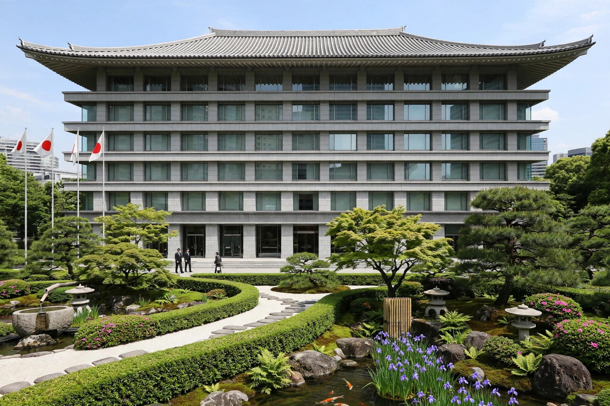

| Prime Minister of Japan 内閣総理大臣 | |
| Incumbent | Shigeru Ishiba (since 1 October 2024) |
|---|---|
| Appointer | The Emperor, following designation by the National Diet |
| Term length | No fixed term; serves while commanding the confidence of the House of Representatives |
| Residence | Kantei, Nagatachō, Tokyo |
| First holder | Itō Hirobumi (1885) |
The Prime Minister of Japan (内閣総理大臣, Naikaku Sōri-Daijin) is the head of government of Japan and the chief executive of the Cabinet. The Prime Minister is designated by resolution of the National Diet from among its members and is formally appointed by the Emperor. The office was created in 1885 by Itō Hirobumi, its first holder, and assumed its modern constitutional form in 1947.
Under Articles 67 and 68 of the Constitution, the Diet designates the Prime Minister, who must be a member of the Diet and, by convention since 1947, a civilian. If the two houses disagree, the choice of the House of Representatives prevails. The Prime Minister appoints and may dismiss the ministers of state, the majority of whom must be Diet members, and exercises control and supervision over the executive branch. As supreme commander of the Japan Self-Defense Forces, the Prime Minister directs national defence through the Minister of Defense.
The Prime Minister's official office and residence is the Kantei in Nagatachō, Chiyoda, Tokyo, adjacent to the National Diet Building. The current building, a five-storey structure with a Japanese-style roof, opened in 2002 on the site of the earlier residence.
There is no fixed term and no formal limit on reappointment; tenure depends on party leadership and the confidence of the House of Representatives. Postwar Japan has had frequent changes of Prime Minister, although some have served long terms: Shinzō Abe was the longest-serving, holding the office for a combined eight years and nine months (2006–2007 and 2012–2020). Shigeru Ishiba became Prime Minister on 1 October 2024 after winning the leadership of the Liberal Democratic Party.